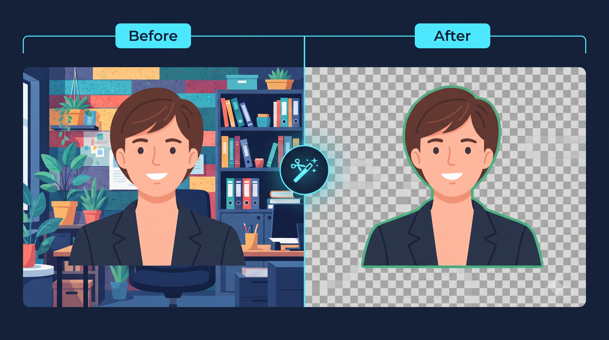

🪄 Image Background Remover
Remove portrait, document, ID card or object backgrounds instantly — 100% in your browser.
Select Any Picture, Object or ID Card
Supports portraits, documents, cards & objects — 100% local processing
Complete Guide: Transparent Background Removal & Color Replacement Online
Removing distracting backgrounds from identity cards, e-commerce products, official seals, and personal portraits has traditionally required complex manual lasso selections in heavy desktop photo software. The OfficeKit Image Background Remover simplifies this workflow into a 100% browser-based operation. Equipped with dual execution engines — a high-precision neural model for human figures and an interactive color-difference algorithm for documents and flat objects — you can produce transparent cutouts in seconds.

📷 [Place Demo / Cutout Graphic Here: assets/images/bg-remover-demo.jpg]How to Remove Backgrounds from Photos and Documents:
- Step 1 - Upload Your File: Drag and drop any JPG, PNG, or WebP picture onto the upload area.
- Step 2 - Select Appropriate Engine: Use the AI Portrait engine for human selfies or headshots. For scanned cards, certificates, and logos, use the Document / Object engine and click directly on the canvas background to sample the target backdrop color.
- Step 3 - Fine-Tune Boundaries: Adjust the Color Tolerance slider to expand or narrow the removal threshold, and apply 1px–3px feathering to prevent jagged edges around fine hair and curves.
- Step 4 - Choose Output Mode: Export as an alpha-transparent PNG cutout, or swap the background with clean studio white, blue, or custom solid tones.
Key Benefits & Features:
- Total Client-Side Privacy: Your photos never upload to remote cloud storage or third-party servers. All pixel separation runs locally within your browser sandbox.
- Dual Engine Flexibility: Seamlessly handle both biological subjects (hair, shoulders, faces) and geometric objects (stamps, signatures, ID cards).
- Lossless Resolution: Maintain the full original pixel dimensions and aspect ratio of your uploaded image.
Frequently Asked Questions (FAQ)
Q: Will the exported PNG have a genuine transparent background?
Yes. When Transparent mode is selected, the output file preserves a true alpha channel (RGBA), allowing you to overlay your subject on any other layout, presentation, or graphic.
Q: How do I handle uneven shadows behind scanned documents?
Increase the Color Tolerance slider slightly (between 40 and 60) and use 2px Edge Feathering to cleanly blend subtle shadow gradients without clipping card text.
Q: Is there any daily file limit or fee?
No. OfficeKit provides fully unlocked, unlimited document processing completely free of charge.